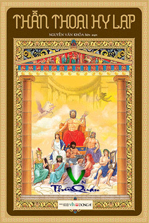

Thần Thoại Hy Lạp
By Nguyễn Văn Khỏa

- Giới Thiệu
- NGUỒN GỐC CỦA THẾ GIAN VÀ CỦA CÁC VỊ THẦN
- CRONOS LẬT ĐỔ OURANOS
- THẦN ZEUS
- Zeus Lật Đổ Cronos. Cuộc Giao Tranh Với Các Titan (Titanomachie)[53]
- Cuộc Giao Tranh Với Các Gigantos (Gigantomachie)[55]
- Cuộc Giao Tranh Với Typhon
- NGUỒN GỐC CỦA LOÀI NGƯỜI. NĂM THỜI ĐẠI
- THẦN PROMÉTHÉE VÀ LOÀI NGƯỜI
- Pandore - Người Đàn Bà Đầu Tiên Của Thế Gian Và Những Tai Họa Zeus Giáng Xuống Trừng Phạt Loài Người
- Nạn Hồng Thủy. Deucalion Và Pyrrha. Giống Người Đá
- Zeus Trừng Phạt Prométhée
- GIA HỆ CÁC VỊ THẦN HY LẠP
- THẾ GIỚI OLYMPE VÀ MƯỜI HAI VỊ THẦN TỐI CAO
- POSÉIDON VÀ CÁC THẦN BIỂN
- HADÈS VÀ THẾ GIỚI ÂM PHỦ
- NỮ THẦN HÉRA
- Héra Và Io
- THẦN APOLLON
- Apollon Diệt Trừ Con Mãng Xà Python Và Lập Đền Thờ Delphes
- Mối Tình Của Apollon Với Tiên Nữ Daphné
- Apollon Trừng Trị Hai Tên Khổng Lồ Con Trai Của Aloéos
- Apollon Và Các Nàng Muses
- Apollon Lột Da Tên Marsyas
- Apollon Trả Thù Cho Asclépios
- NỮ THẦN ARTÉMIS
- Artémis Trừng Phạt Niobé
- Artémis Biến Actéon Thành Hươu
- NỮ THẦN ATHÉNA
- Athéna Thắng Poséidon, Được Cai Quản Miền Đồng Bằng Attique
- Athéna Biến Arachné Thành Con Nhện
- THẦN HERMÈS
- THẦN ARÈS
- NỮ THẦN APHRODITE
- Aphrodite Ban Phúc Cho Pygmalion
- Aphrodite Giáng Họa Xuống Narcisse
- Mối Tình Của Aphrodite Với Adonis
- THẦN ÉROS
- Cupidon Và Psyché
- THẦN HÉPHAÏSTOS
- NỮ THẦN DÉMÉTER VÀ CON GÁI, PERSÉPHONE
- Déméter Truyền Nghề Cho Triptolème
- Déméter Trừng Phạt Érysichthon
- THẦN DIONYSOS
- Dionysos Bị Vua Licurgue Bạc Đãi
- Dionysos Trừng Phạt Những Kẻ Chống Đối
- Dionysos Thoát Khỏi Tay Bọn Cướp Biển
- Dionysos Trọng Thưởng Icarios
- Thần Dionysos Và Tên Vua Midas Tham Vàng
- Dionysos Trở Thành Một Vị Thần Olympe
- Hội Dionysos
- THẦN PAN
- Pan Thi Tài Với Apollon
- MỐI TÌNH CỦA SÉLÉNÉ VỚI ENDYMION
- CUỘC PHIÊU LƯU CỦA PHAÉTON
- CHUYỆN NHỮNG NÀNG DANAÏDES
- NGƯỜI ANH HÙNG PERSÉE
- Persée Giết Ác Quỷ Méduse
- Persée Trừng Phạt Atlas
- Persée Cứu Công Chúa Andromède
- Phinée Mưu Cướp Andromède
- Persée Trở Về Quê Hương
- NGƯỜI ANH HÙNG HÉRACLÈS
- Nữ Thần Héra Tìm Cách Giết Chú Bé Héraclès.
- Mười Hai Kỳ Công Của Héraclès
- 1 - Giết Con Sư Tử Ở Némée
- 2 - Giết Con Mãng Xà Hydre Ở Lerne
- 3 - Bắt Sống Con Lợn Rừng Érymanthe
- 4 - Bắt Sống Con Hươu Cái Cérynie
- 5 - Tiễu Trừ Đàn Ác Điểu Ở Hồ Stymphale
- 6 - Dọn Sạch Chuồng Bò Augias
- 7 - Bắt Sống Con Bò Mộng Ở Đảo Crète
- 8 - Đoạt Bầy Ngựa Cái Của Diomède
- 9 - Đoạt Chiếc Thắt Lưng Của Hippolyte - Vị Nữ Hoàng Cai Quản Những Người Amazones
- 10 - Đoạt Đàn Bò Của Géryon
- 11 - Bắt Sống Chó Ngao Cerbère
- 12 - Đoạt Những Quả Táo Vàng Của Chị Em Hespérides
- Héraclès Cưới Dejánire Thực Hiện Lời Hứa Với Vong Hồn Méléagre
- Héraclès Đánh Phá Thành Troie
- Héraclès Được Gia Nhập Vào Hàng Ngũ Các Vị Thần Của Thế Giới Olympe
- Con Cháu Của Héraclès (Héraclides)
- HỘI OLYMPIQUES
- TRUYỆN VUA SISYPHE PHẢI CHỊU CỰC HÌNH
- CHIẾN CÔNG VÀ CÁI CHẾT CỦA DŨNG SĨ BELLÉROPHON
- CHUYỆN VỀ GIA HỆ NGƯỜI ANH HÙNG TANTALE
- Pélops Sinh Cơ Lập Nghiệp Ở Đất Hy Lạp
- Tội Ác Và Sự Thù Hằn Giữa Hai Anh Em Atrée Và Thyeste
- CHUYỆN HAI CHỊ EM PROCNÉ VÀ PHILOMÈLE BIẾN THÀNH CHIM
- MỐI TÌNH CỦA ZEUS VỚI NÀNG EUROPE
- TRUYỆN HAI VỢ CHỒNG CADMOS BIẾN THÀNH RẮN
- CHUYỆN ANH EM SINH ĐÔI ZÉTHOS VÀ AMPHION
- DÉDALE VÀ ICARE THOÁT KHỎI CUNG ĐIỆN LABYRINTHE
- NGƯỜI ANH HÙNG THÉSÉE
- Thésée Trên Đường Tới Athènes.
- Thésée Ở Athènes
- Thésée Trừng Trị Con Quái Vật Minotaure
- Thésée Chống Lại Cuộc Tiến Công Của Những Nữ Chiến Sĩ Amazones
- Thésée Và Pirithoos
- Cái Chết Của Thésée
- NGƯỜI ANH HÙNG MÉLÉAGRE
- CUỘC GIAO TRANH GIỮA ANH EM DIOSCURES VỚI ANH EM APHARÉTIDES
- NỖI BUỒN CỦA CHÀNG CYPARISSOS
- CÁI CHẾT CỦA CHÀNG HYACINTHOS
- TRUYỆN VỢ CHỒNG CÉPHALE VÀ PROCRIS
- CHUYỆN NGƯỜI DANH CA ORPHÉE
- Mối Tình Chung Thủy Với Nàng Eurydice
- Cái Chết Của Orphée
- TRUYỀN THUYẾT VỀ NHỮNG NGƯỜI ARGONAUTES
- Sự Tích Bộ Lông Cừu Vàng
- Jason Chiêu Tập Các Chiến Hữu Chuẩn Bị Cho Cuộc Hành Trình
- Những Ngày Ở Đảo Lemnos
- Chuyện Không May Xảy Ra Ở Bán Đảo Cyzique
- Những Gì Đã Xảy Ra Khi Con Thuyền Argo Dừng Lại Ở Đất Mysie
- Cuộc Xung Đột Với Người Bébryces Ở Xứ Bithynie
- Trôi Dạt Vào Đất Thrace, Những Người Argonautes Cứu Cụ Già Phinée Thoát Khỏi Tai Họa Của Lũ Harpies
- Qua Symplégades
- Đến Đảo Arétiade
- Jason Đến Gặp Vua Aiétès
- Médée Giúp Đỡ Jason
- Jason Đương Đầu Với Những Thử Thách
- Médée Giúp Jason Đoạt Bộ Lông Cừu Vàng
- Hành Trình Trở Về Của Những Người Argonautes
- Jason Và Médée Giết Pélias
- Cái Chết Của Jason
- TRUYỀN THUYẾT VỀ CUỘC CHIẾN TRANH TROIE
- Nguồn Gốc Của Cuộc Chiến Tranh Thành Troie
- Quả Táo Của Mối Bất Hòa
- Nàng Hélène Bị Paris Quyến Rũ
- Quân Hy Lạp Tập Trung Ở Cảng Aulis. Đổ Bộ Lên Đất Mysie
- Quân Hy Lạp Lại Tập Trung Ở Aulis
- Tướng Philoctète Bị Bỏ Lại Ở Dọc Đường
- Những Gì Đã Xảy Ra Trong Chín Năm Giao Tranh
- Mối Bất Hòa Giữa Chủ Tướng Agamemnon Với Achille
- Không Thể Chấm Dứt Chiến Tranh Bằng Định Ước Đấu Tay Đôi
- Quân Hy Lạp Tấn Công. Chiến Công Của Tướng Diomède
- Hector Từ Giã Andromaque Trước Khi Xuất Trận
- Agamemnon Nhận Ra Lỗi Lầm Xin Achille Xuất Trận
- Ulysse Và Diomède Đột Nhập Vào Doanh Trại Quân Troie Trinh Sát
- Quân Troie Tiến Công Thắng Lợi Tràn Vào Doanh Trại Quân Hy Lạp, Thọc Sâu Vào Khu Vực Chiến Thuyền
- Hector Giết Chết Patrocle
- Achille Nguôi Giận, Hòa Giải Với Agamemnon
- Achille Xuất Trận Đánh Đuổi Quân Troie Phải Chạy Về Thành
- Achille Giết Chết Hector
- Lão Vương Priam Đi Chuộc Xác Con
- Achille Giết Chết Nữ Hoàng Panthésilée
- Achille Giết Chết Chủ Tướng Memnon Cầm Đầu Đạo Quân Éthiopie
- Achille Tử Trận
- Ajax Lớn, Con Của Télamon, Tự Tử
- Chiến Công Của Ulysse. Philoctète Tham Chiến
- Thành Troie Thất Thủ
- Những Biến Cố Trong Hành Trình Trở Về Của Quân Hy Lạp
- CHUYỆN VỀ ODYSSÉE VÀ NGƯỜI CON TRAI, TÉLÉMAQUE
- Hành Trình Đi Tìm Cha Của Télémaque
- Télémaque Tới Pylos
- Télémaque Đến Sparte
- Hành Trình Trở Về Của Ulysse
- Thoát Khỏi Hang Tên Khổng Lồ Polyphème Ăn Thịt Người
- Bị Những Người Khổng Lồ Lestrygons Tiêu Diệt, Đoàn Thuyền Mười Hai Chiếc Chỉ Thoát Được Có Một Con Thuyền Của Ulysse
- Cứu Đồng Đội Thoát Khỏi Kiếp Lợn Trong Tay Tiên Nữ-Phù Thủy Circé
- Cuộc Hành Trình Xuống Thế Giới Âm Phủ Của Thần Hadès
- Ăn Thịt Bò Của Thần Hélios, Cả Đoàn Thủy Thủ Bị Trừng Phạt Chỉ Riêng Mình Ulysse Sống Sót
- Ulysse Thoát Khỏi Sự Giam Cầm Của Tiên Nữ Calypso
- Thần Poséidon Gây Bão Làm Đắm Bè. Ulysse Trôi Dạt Vào Bờ Biển Xứ Phéacie
- Ulysse Gặp Công Chúa Nausicaa. Công Chúa Đưa Chàng Về Thành
- Vua Alcinoos Tiếp Đãi Và Cho Thuyền Chở Chàng Về Quê Hương
- Ulysse Trừng Trị Bọn Cầu Hôn, Đoàn Tụ Với Gia Đình
- Ulysse Gặp Pénélope
- Cuộc Chiến Đấu Với Bọn Cầu Hôn
- Pénélope Nhận Ra Chồng
- Eupithès Đòi Trả Thù, Nữ Thần Athéna Hòa Giải
- CHUYỆN VỀ AGAMEMNON VÀ NGƯỜI CON TRAI, ORESTE
- Oreste Báo Thù
- Oreste Thoát Khỏi Sự Trừng Phạt Của Những Nữ Thần Érinyes
- Oreste Đoạt Tượng Nữ Thần Artémis Ở Tauride